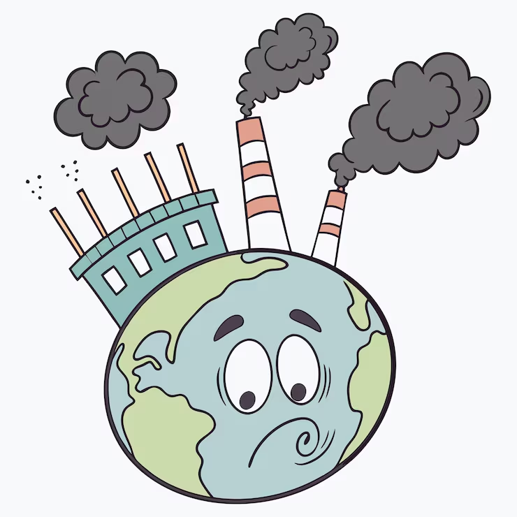
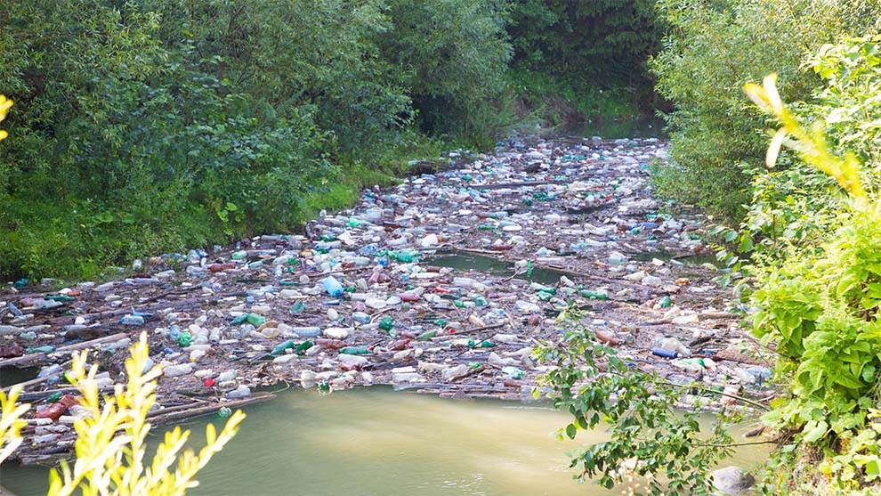

El mar es contaminado debido a los desechos que los habitantes de las ciudades arrojan
El mar es contaminado debido a los desechos que los habitantes de las ciudades arrojanLa contaminación es la alteración nociva del estado natural de un medio como consecuencia de la introducción de un agente totalmente ajeno a ese medio (contaminante), causando inestabilidad, desorden, daño o malestar en un ecosistema, en un medio físico o en un ser vivo.

Debido a las emisiones de CO2 y CO del parque vehicular de la ciudad, además de las emisiones de las fabricas productoras de bienes y servicios, se forma una nube de humo sobre la ciudad llamada comúnmente smog, lo cual es muy dañino para los habitantes.El mar es contaminado debido a los desechos que los habitantes de las ciudades arrojan

Los ríos son contaminados por las sustancias químicas que los fabricantes vierten en ellos. La tierra es contaminada por los desechos industriales y agrícolas que se vierten en ella.
La tierra es contaminada por los desechos industriales y agrícolas que se vierten en ella.